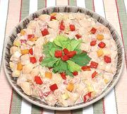

|
Potato & Vegetable SaladItaly - Insalata di Patate | ||||
| Makes: Effort: Sched: DoAhead: |
2-1/2 # ** 2 hrs Yes |
This is one of the finest Potato Salads ever made. Italians love tart potato salads, but this one is a little unusual (for Italy). It uses Mayonnaise instead of Olive Oil. | |||
|
|
2-1/2 ------- 4 6 1-1/4 1/4 3 1/2 1/2 1 1/2 1 ------- 1 ------- |
# --- oz oz c c T t T t T t --- c --- |
Potatoes, Red (1) Dressing Leeks Celery Vegi Pickles (2) Pickle Liquid Balsamic Vinegar Sugar Lemon Juice Dijon Mustard Salt Pepper ---------- Mayonnaise -- Garnish Vegi Pickles Celery Leaves |
If the somewhat beige color bothers you for a potato salad, you could use Condimento Bianco (White Balsamic) instead of regular Balsamic Vinegar, but that certainly hasn't been an issue at parties here. Do Ahead - (3 days)
|